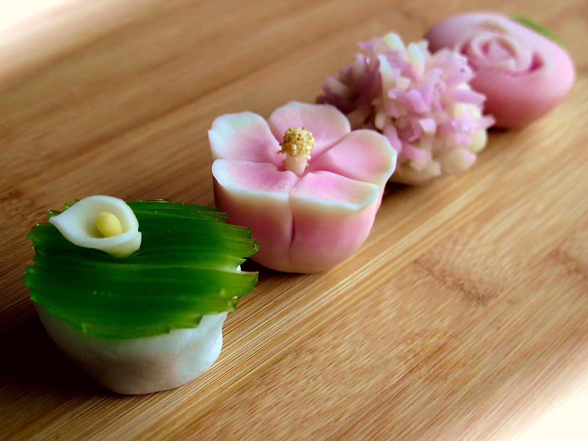
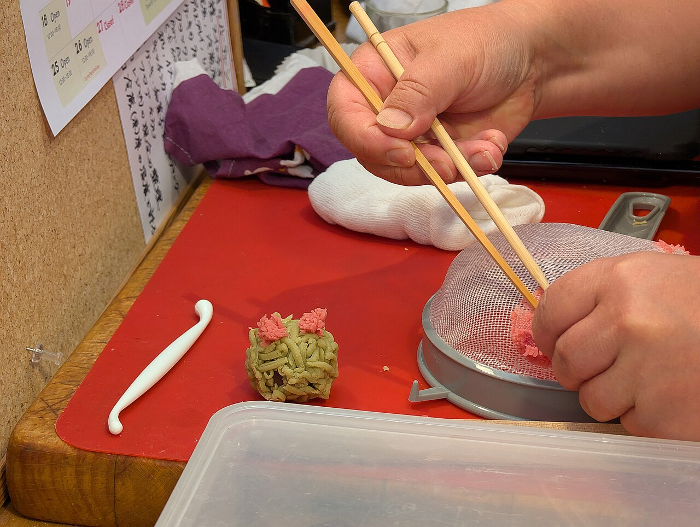
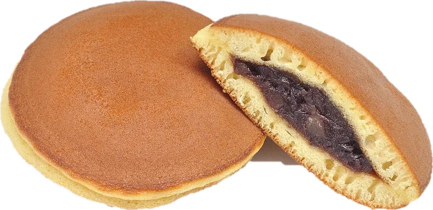
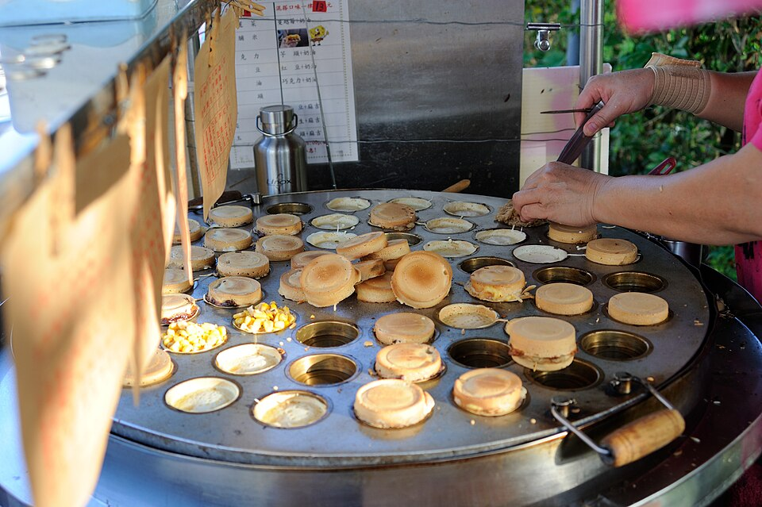
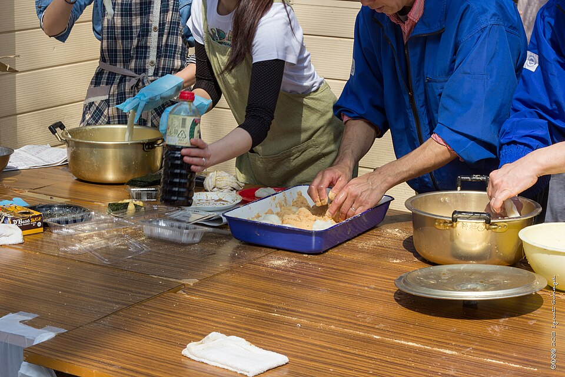

城下町の和菓子屋
小鞠屋
昭和十一年から
霜月の上生菓子、四種朝10時から店に並びます
城下町・大手前通りの和菓子屋です。
折詰を予約する
霜月の上生菓子
月替わりの上生菓子と、どら焼き・最中を作っています。上生菓子は毎月1日に四種を入れ替えます。各40個、朝10時から店に並べ、なくなりしだい終わりです。
初霜
はつしも／こなし白いこなしに、砕いた氷餅をまぶしました。中はこしあん。
440円税込吹き寄せ
ふきよせ／きんとん紅葉と銀杏の色のそぼろを、風に寄せたように。中は粒あん。
440円税込亥の子餅
いのこもち／求肥黒ごまと肉桂を練りこんだ求肥に、亥の子の焼き印。十一月だけ作ります。
440円税込山茶花
さざんか／練り切り桃色の花びらを三枚重ね、しべは黄身あん。中は白あん。
440円税込
師走の四種は、12月1日（火）から。
どら焼きと、
最中「小鞠」


どら焼き
230円銅板で一枚ずつ焼きます。あんは北海道の小豆の粒あん。
栗どら焼き
320円渋皮煮の栗を一粒。9月から12月まで。
最中「小鞠」
各190円鞠かがりの模様の皮に、粒あん・こしあん・柚子の白あんの三つ。皮とあんは別に包みます。食べる前にはさんでください。
最中 十個箱
2,100円三つのあんを取りまぜて十個。掛け紙をかけてお渡しします。
折詰の予約
お祝い・法事・手土産の折詰は、受け取りの3日前の正午までに電話でご予約ください。箱に詰める菓子を選んで、下の予約票を電話で読み上げていただくと早く済みます。

予約票
- 受け取り
- —
- 予約の締め
- —
- 中身
- 九つ入。まだ空です
- 合計（税込）
- 160円
電話 000-000-1936（架空の番号） 9時〜18時、水曜は休みです。掛け紙（鞠の絵・無地）とのしは無料でおつけします。
店の場所と
営業時間
9時〜18時
水曜休み（祝日は開けます）。上生菓子は10時から。
- 住所
- 志野原市大手町2-14
- 行き方
- 志野原駅から城下めぐりバスで7分、「大手門」で降りて大手前通りを南へ徒歩2分
- 駐車場
- 店の裏に2台
- 電話
- 000-000-1936（架空の番号）
昭和十一年、初代の小森とめが、鞠の形の最中を売り出したのが始まりです。屋号はその最中の名から。いまは三代目と四代目の二人で、朝7時にあんを炊いています。
写真：城下町の通りを歩く人たち（秋田・角館の武家屋敷通り、2018年4月）。小鞠屋のある町ではありません（掬茶／Wikimedia Commons／CC BY-SA 4.0）